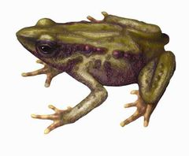
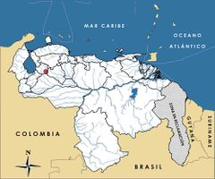

Atelopus sp.
| Sapito arlequín de Guaramacal | |
|---|---|
|  | |
| Riesgo de extinción | |
 En peligro (UICN) | |
| Clasificación científica | |
| Reino: | Animalia |
| Filo: | Chordata |
| Clase: | Amphibia |
| Orden: | Anura |
| Familia: | Bufonidae |
| Género: | Atelopus |
| Especie: | Atelopus sp. |
| Nombre binomial | |
|
Atelopus sp. La Marca et GarcíaPérez (en preparación) | |
| Distribución | |
|
 Mapa de distribución de Atelopus sp. nov. | |
Contenido
Información de Evaluación
- Categoría y Criterio Regional: En Peligro A2c
- Fecha de Evaluación Regional: 2015
- Evaluadores: Jesús Morales-Campos y Ariany García-Rawlins
- Categoría y Criterio Global: No Evaluado
Justificación
Evaluaciones Previas
1999: No Evaluado (NE)
2008: En Peligro Crítico (CR)
Información General
Nombres comunes
Sapito arlequín de Guaramacal, Guaramacal harlequin frog, Guaramacal harlequin toad.
Notas taxonómicas
Sinónimos
Descripción
Sapito arlequín cuya coloración dorsal va desde tonos amarillentos hasta verde oscuro. En el dorso presenta algunos tubérculos o protuberancias grandes color púrpura sobre el fondo verdoso. Su vientre es rojo sangre, los flancos y patas son rojizos. Posee tubérculos sobre flancos y extremidades. Tiene miembros posteriores relativamente cortos, y el hocico proyectado. Su aspecto es similar al Atelopus chrysocorallus, del cual se diferencia por su tamaño y por tener un patrón distinto de coloración, entre otras características. Las hembras adultas alcanzan alrededor de 5,3 cm, mientras que los machos miden aproximadamente 3,8 cm. Al igual que otras especies del género Atelopus, es diurna, terrestre y habita en el bosque húmedo montano cerca de pequeñas quebradas (Rueda-Almonacid et al. 2005a).
Distribución
Se trata de una especie endémica de Venezuela. Solo se le conoce en las quebradas El Pollo y El Pollito, distantes una de la otra por aproximadamente un kilómetro. Ambos cursos de agua están localizados en el parque nacional general Cruz Carrillo (Guaramacal), en el macizo de Guaramacal, ubicado entre el estado Trujillo y una reducida porción del estado Portuguesa.
- Sistema: Terrestre
- Bioregión:
- Intervalo altitudinal (m):
- Endémica: Sí
Situación
El sapito arlequín de Guaramacal es una especie aún no descrita para la ciencia, y que se ha catalogado como Atelopus sp. 32 (García-Pérez 2005, La Marca et al. 2005b, Lötters et al. 2005). Como otras especies de este género, ha sufrido disminuciones drásticas, hasta el punto de que no se han observado individuos adultos desde diciembre de 1987, cuando fue descubierta (García-Pérez 1997, García-Pérez 1999, García-Pérez 2005, La Marca y Lötters 1997, Young et al. 2001, La Marca 2004a, Lötters et al. 2004a, Manzanilla y La Marca 2004a). Luego de realizar exploraciones minuciosas entre 1994 y 1995, y visitar la zona al menos una vez por año entre 1996 y 2002, se comenzó un nuevo seguimiento en 2004, en el que se encontraron renacuajos en las quebradas El Pollo y El Pollito, este último sitio completamente nuevo (García-Pérez 1997, García-Pérez 2005). En 2005, se realizaron once salidas de campo hacia ambas quebradas, con veintidós días efectivos de actividades, en las cuales se llevaron a cabo conteos y registros fotográficos de renacuajos, búsqueda de individuos adultos a través de transectas visuales y de cantos, caracterización de sitios de cría y pesquisa de nidadas. Solo se observaron 128 individuos (renacuajos). No se encontraron adultos ni nidadas, y los cantos resultaron ser de una especie de dendrobátido aún no identificada. Rastreos en 2012 revelaron la existencia de renacuajos en dos sitios de la quebrada El Pollo, en número variable entre cinco y setenta renacuajos por lugar, cerca de la localidad tipo de la especie. Una tercera zona reproductiva no reveló presencia de larvas en ese mismo año. La monitorización continua en el área indica que ha habido mortalidad catastrófica en algunas de estas congregaciones de renacuajos. Situaciones similares se han reportado para poblaciones de otras especies de Atelopus, de las cuales en la actualidad se cuenta con algunas observaciones, previamente catalogadas como críticamente amenazadas (Lötters et al. 2005, García-Pérez 2006). Aunque no ha sido evaluada en el ámbito global, los especialistas sugieren su clasificación en la categoría En Peligro Crítico (Rueda-Almonacid et al. 2005a).
- EOO (km2): Temporalmente sin información
- AOO (km2): Temporalmente sin información
- Tendencia Poblacional: Decreciendo
Amenazas
Se ha identificado un conjunto de factores físicos que afectan a los renacuajos e impiden una recuperación más rápida de la población. Entre ellos, se pueden enumerar los deslizamientos de tierra, la infiltración del agua de las quebradas, la colmatación y eutroficación de pozos, la reducción extrema del caudal y las súbitas crecidas que arrastran las rocas del sustrato donde están los animales transformando constantemente la fisonomía de las quebradas. Existen pérdidas desastrosas en Guaramacal debido a la inestabilidad del terreno y a las altas pendientes, que provocan deslizamientos de tierra, y por las sequías y/o crecidas de las quebradas antes de que ocurra la metamorfosis. Su desarrollo corporal es muy lento, calculado en al menos seis meses, lo cual les hace dependientes del agua por más tiempo y por lo tanto vulnerables a las alteraciones en los cuerpos de agua. En ambientes fríos, el progreso corporal y la madurez sexual de organismos ectotermos son mucho más lentos que en ambientes más cálidos (García-Pérez 2006).
Conservación
A raíz de las últimas investigaciones realizadas, se hace evidente que las poblaciones de esta especie necesitan una acción urgente que les permita recuperarse. Como una medida para evitar las muertes por sequías y/o crecidas catastróficas, se propone la relocalización de los renacuajos, desde pozos con altas probabilidades de secarse, hacia pozos más estables y con características de sustrato que sean óptimos para ellos. En este sentido, se aspiraría a iniciar un programa de cría ex situ, en el cual se mantengan ejemplares extraídos de los cuerpos de agua, transportados a un sitio con condiciones controladas de suministro de agua y luz, para tratar de contrarrestar la fuente de mortalidad asociada a la inestabilidad ambiental y de terreno en los sitios donde habita la especie. Una vez lograda la metamorfosis de los renacuajos, se procedería a liberar a los individuos en su hábitat original. Se ha propuesto un área adyacente al puesto de guardaparques en la entrada principal del parque nacional Guaramacal, donde existe una capacidad de suministro continuo de agua desde una quebrada cercana y se dispone de espacio para construir el criadero con el apoyo del personal de Inparques-Guaramacal (García-Pérez 2006).
Autorías
Autores originales
Josefa Celsa Señaris y Fernando J. M. Rojas-Runjaic
Colaboradores
Ilustrador
Ximenamaria Rausseo
Referencias
- García-Pérez, J. E. (1997). Evaluación del estado poblacional de dos especies de sapitos amenazadas de extinción: Atelopus mucubajiensis y Atelopus sp. (Anura: Bufonidae) Parque Nacional Sierra Nevada y Parque Nacional Páramo Guaramacal "General Cruz Carrillo", en los Andes venezolanos. Páginas: 211-215. En: Novo, I. (Ed.). Ciencia y conservación en el sistema de parques nacionales de Venezuela. Impresos Altamira S.A. Caracas.
- García-Pérez, J. E. (1999). Herpetofauna del Macizo de Guaramacal. En: Cuello, N. (Ed.). Parque Nacional Guaramacal. Fundación Polar. Caracas, Venezuela.
- García-Pérez, J. E. (2005). Survival of an undescribed Atelopus from the Venezuelan Andes. Froglog 68: 2-3.
- García-Pérez, J. E. (2006). Monitoreo de una población de Atelopus sp. 32, en el Parque Nacional Guaramacal, cordillera de Mérida. Caracas, Venezuela. 5 pp.
- La Marca, E. (2004a). Der Rückgang von Froschpopulationen in den Hochanden Venezuelas. Reptilia 46: 34-38.
- García-Pérez, J. E. y La Marca, E. (2015). Sapito arlequín de Guaramacal, Atelopus sp. En: J.P. Rodríguez, A. García-Rawlins y F. Rojas-Suárez (eds.) Libro Rojo de la Fauna Venezolana. Cuarta edición. Provita y Fundación Empresas Polar, Caracas, Venezuela. Recuperado de: animalesamenazados.provita.org.ve/content/sapito-arlequin-de-guaramacal
- La Marca, E., Lips, K. R., Lotters, S., Puschendorf, R., Ibanez, R., Rueda-Almonacid, J. V., Schulte, R., Marty, C., Castro, F., Manzanilla-Puppo, J., Garcia-Perez, J. E., Bolanos, F., Chaves, G., Pounds, J. A., Toral, E. y Young, B. E. (2005b). Catastrophic population declines and extinctions in Neotropical harlequin frogs (Bufonidae: Atelopus). Biotropica 37(2): 190-201.
- La Marca, E. y Lötters, S. (1997). Monitoring of declines in Venezuelan Atelopus (Amphibia: Anura: Bufonidae). Páginas: 207-213. En: La Marca, E. y Lötters, S. (Eds.). Herpetologia Bonnensis. Societas Europeae Herpetologicae. Bonn, Alemania.
- Lötters, S., La Marca, E., Stuart, S., Gagliardo, R. W. y Veith, M. (2004a). A new dimension of current biodiversity loss? Herpetotrópicos 1(3): 29-31.
- Lötters, S., La Marca, E., Gagliardo, R. W., Señaris, J. C. y Veith, M. (2005). Harlequin frogs back? Some thoughts and speculations. Froglog 70: 1-3.
- Manzanilla, J. y La Marca, E. (2004a). Museum records and field samplings as sources of data pointing to population crashes for Atelopus cruciger, a proposed critically endangered species from the Venezuelan coastal range. Memoria de la Fundación La Salle de Ciencias Naturales 62(157): 5-29.
- Rodríguez, J. P. y Rojas-Suárez, F. (1999). Libro Rojo de la Fauna Venezolana, segunda edición. PROVITA, Fundación Polar. Caracas. 444 pp.
- Rodríguez, J. P. y Rojas-Suárez, F. (Eds.) (2008). Libro Rojo de la Fauna Venezolana, tercera edición. Provita y Shell Venezuela, S. A. Caracas, Venezuela. 364 pp.
- Rueda-Almonacid, J. V., Rodríguez Mahecha, J. V., La Marca, E., Lötters, S., Kahn, T. y Angulo, A. (2005a). Ranas Arlequines. Serie Libretas de Campo. Conservación Internacional. Bogotá, Colombia: 158.
- Young, B. E., Lips, K. R., Reaser, J. K., Ibáñez, R., Salas, A. W., Cedeño, J. R., Coloma, L. A., Ron, S., La Marca, E., Meyer, J. R., Muñoz, A., Bolaños, F., Chaves, G. y Romo, D. (2001). Population declines and priorities for amphibian conservation in Latin America. Conservation Biology 15(5): 1213-1223.